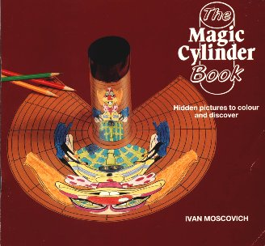
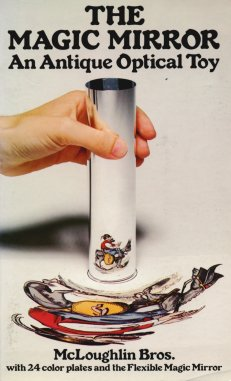

ART OF ANAMORPHOSIS
ART OF ANAMORPHOSIS Links
ART OF ANAMORPHOSIS Here are two "cheap and cheerful" books, ideal for children:
|  |  |
| The Magic Cylinder Book, Ivan Moscovich. Tarquin Publications (ISBN 0-906212-67-7). | The Magic Mirror: an antique optical toy, McLoughlin Brothers. Dover Books. (Reprint of a popular late-19th century book of mirror-cylindrical images) |
The following is an extremely neat package of illustrated booklet, plastic mirrors and "do-it-yourself" transformation grids:
Anamorphosis has been the subject of several Scientific American articles, as well as a recent column in Science News:
"Anamorphic art", Martin Gardner, Scientific American, vol 232, no 1, pages 110-116, January 1975. Reprinted in Time Travel and Other Mathematical Bewilderments, New York: W.H. Freeman, 1988.
"Anamorphic pictures: Distorted views from which distortion can be removed", Jearl Walker, Scientific American, vol 245, no 1, pages 140-147, July 1981.
"Math Trek: Art of the grid", Ivars Peterson, Science News, 12 August 2000 (www.sciencenews.org/20000812/mathtrek.asp).
Anamorphosis gets a good mention in the following popular books about perspective:
La Perspective en Jeu: Les dessous de l'image, Philippe Comar. Gallimard, Paris, 1992.
Eyewitness Guides: Perspective. Dorling-Kindersley/National Gallery Publications, 1992.
An Introduction to Perspective (DK Art School), Ray Smith. Dorling-Kindersley, 1995.
What the Painter Sees. Kingfisher, London, 1996. (For younger readers; out of print?)
You may also find anamorphoses in books of optical illusions and tricks. This one is particularly good:
Finally, two unusual books on the art and psychology of mirror images:
Mirrors in Mind, Richard Gregory. W.H. Freeman, New York, 1996.
On Reflection, Jonathan Miller. National Gallery Publications, London, 1998.
Scholarly books and exhibition catalogues on anamorphosis have been published from time to time in the last 30 years, almost all of which are now out-of-print. These books are often accessible in large academic libraries, such as the Science Museum Library in London (which is unusual in offering free and immediate admission to the public).
Anamorphoses, ou, Magie artificielle des effets merveilleux, J. Baltrusaitis. 1969. Translated into English as Anamorphic Art, 1977 (this is supposed to be in-print from the British publisher Chadwick-Healey, but I cannot confirm this).
Anamorphoses: chasse a travers les collections du musée. Musée des arts decoratifs, Paris, 1975.
Hidden Images: Games of perception, anamorphic art, illusion, F. Leeman, J. Elfers and M. Schuyt. Harry Abrams, New York, 1976. (This one is fairly easy to find cheaply second-hand; for example abebooks.com usually lists several copies.)
Anamorphoses, ou, Thaumaturgus opticus, J. Baltrusaitis. Flamarrion, Paris, 1984. Originally a large-format hardback, this is currently available in a cheap paperback re-print, as "tome II" (ie. volume 2) of the series "Les Perspectives Dépravées" (Flamarrion, 1996, ISBN 2-80-084623-3, available on the internet from, for example, www.amazon.fr).
There is an extremely useful article on the mathematical transformations required to create anamorphic images:
Books on the history of perspective in art, with significant attention to anamorphosis:
Perspective in Perspective, Lawrence Wright. Routledge & Kegan Paul, London, 1983. (Out-of-print, highly recommended)
Perspective and Other Drawing Systems. Fred Dubery and John Willats. Van Nostrand Reinhold, New York, 1983. (Out-of-print)
The Science of Art, Martin Kemp. Yale University Press, 1990.
Books on vision, perception and the "psychology of art" (though not directly about anamorphosis):
Optics, Painting and Photography, M. H. Pirenne. Cambridge University Press, 1970. (Out of print)
Art and Illusion, Ernst Gombrich. Phaidon Press, Oxford, 1977.
The Intelligent Eye, Richard Gregory. Weidenfeld & Nicholson, London, 1970. (Out of print)
Eye and Brain: The psychology of seeing, Richard Gregory. Oxford University Press, fifth edition, 1998.
This web site is developed by Phillip Kent